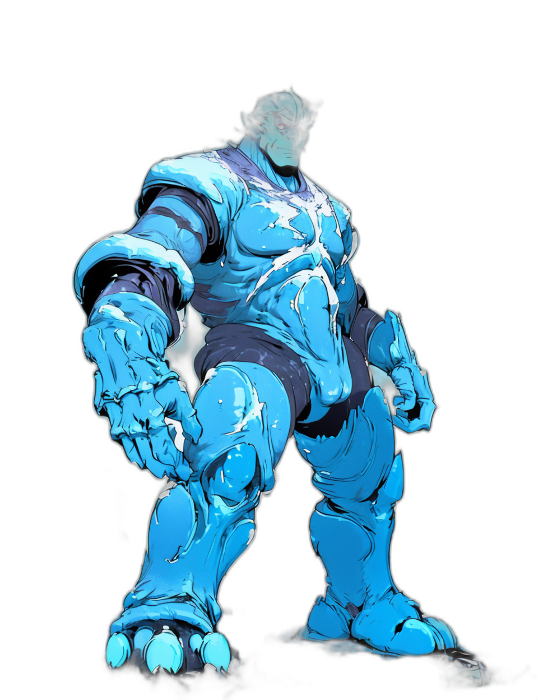
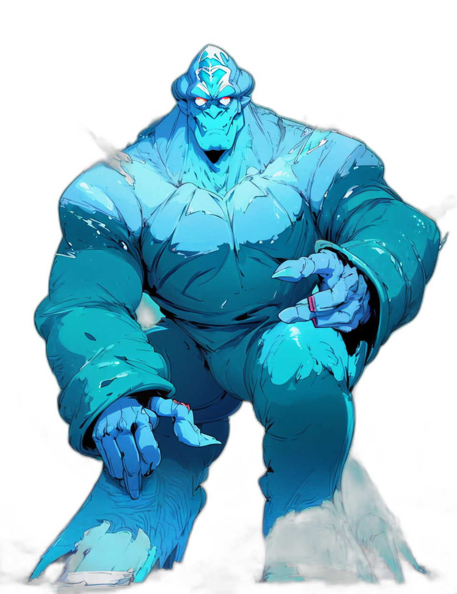
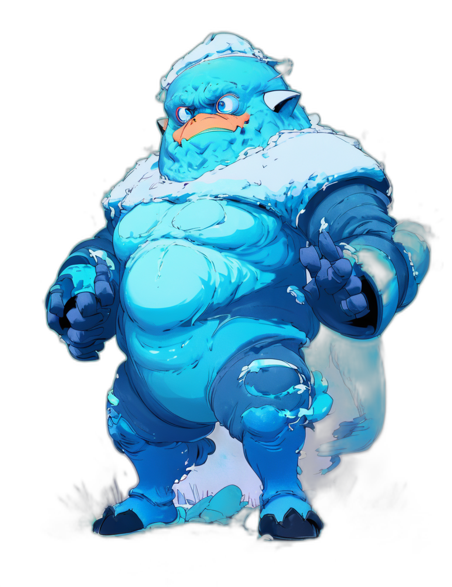
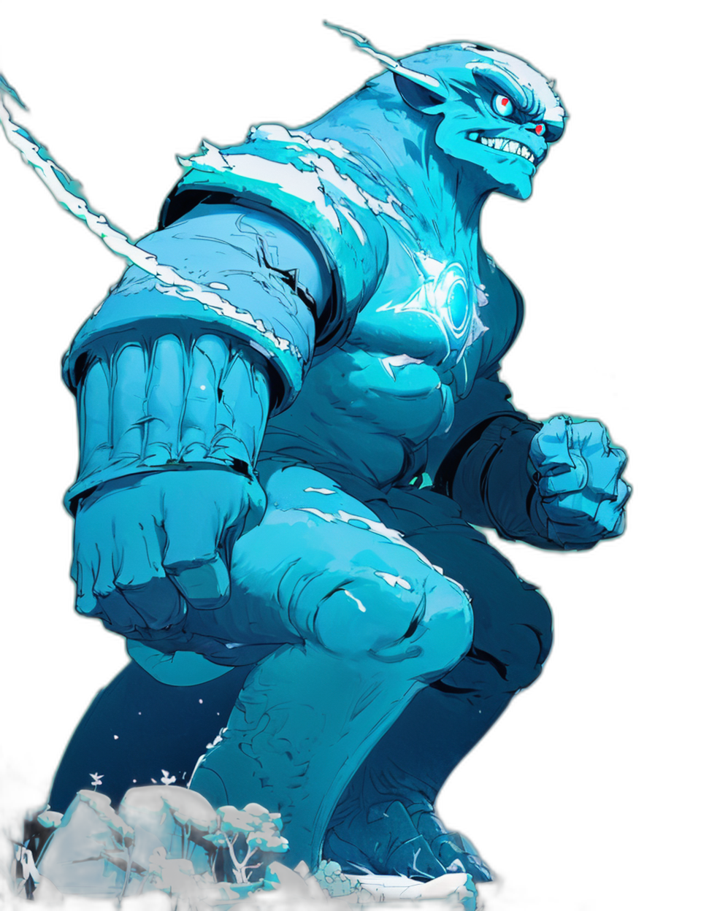

monsters-001とは異なり、これは「1つのコンセプト(Frost Golem = round1で最も評価の高かった案)を複数のスタイル/技法で描き比べる」ラウンドです。画風がまだ統一されていないのは意図的なもので、この中から品質基準となるスタイルを選定するための比較材料です。生成はシンプルな2Dイラスト生成のみ(3D変換・リグ・アニメ工程なし)。Unlike monsters-001, this round fixes ONE concept (Frost Golem — the strongest-rated design from round 1) and renders it across several distinct styles/techniques for comparison. The style is intentionally NOT unified yet — this is comparison material to pick the quality baseline. Generation uses a simple static 2D illustration pipeline only (no 3D conversion / rigging / animation).
太い輪郭線とフラットな塗り。初回生成では意図しない人物が写り込んだため、ネガティブプロンプトを強化して再生成した版。ユーザーが最有力候補として選択。Bold outlines, flat shading. First attempt included an unintended extra human character; regenerated with strengthened negative prompt. Selected by the user as the leading direction.
同じチェックポイントでもプロンプトだけでここまで画風が変わる例。柔らかい滲みと筆致。Same checkpoint as #1, style driven purely by prompt wording. Soft washes and visible brush texture.
除外した候補Dropped Candidate
#4 (dropped)
SDXLベース・高精細
SDXL base, high-detail
sd_xl_base_1.0
このGPU(8GB)ではSDXL単体ロード時にVRAM不足でハング(進捗停止)し、interruptで中断。今回のシンプル方針では見送り。将来別途調査の価値あり。On this 8GB GPU, loading SDXL alone caused a VRAM-pressure hang (progress stalled indefinitely); interrupted manually. Dropped for now given the "simple, reliable" mandate — worth investigating separately later.
#2方向の追加バリエーション(透過背景)#2 Direction — More Variations (transparent background)
背景はU2Net(rembg)による自動セグメンテーションで透過化(緑/シアン背景のカラーキー方式は、氷モンスター自体が寒色系でキー色と衝突し破綻したため不採用)。カードの市松模様は透過部分の目安です。Backgrounds removed via U2Net (rembg) automatic segmentation (a color-key/chroma-key approach was tried first but broke down since the icy creature's own cool palette collides with green/cyan key colors). The checkered pattern on each card marks the transparent area.
#2-original

元の#2(透過版)
Original #2, transparency added
toonyou_beta6 · seed 887701
#2-a

同一プロンプト・別シード
Same prompt, different seed
toonyou_beta6 · seed 887701 (regenerated)
#2-b

丸みのあるチビ体型
Round, chibi-ish proportions
toonyou_beta6 · seed 300003
#2-c

戦闘態勢ポーズ
Battle-ready pose
toonyou_beta6 · seed 400004
失敗した試行(参考)Failed Attempts (for reference)
同バッチで2件、ブリーフ(全身・正面)を満たさず除外: 肩に氷の棘を足した版はフレームアウトしてほぼ写らず、氷の冠を足した版は上半身のみのポートレートになった。Two more attempts in the same batch didn't meet the brief (full body, front-facing) and were excluded: the shoulder-spikes variant framed almost entirely out of shot, and the ice-crown variant came out as a bust/portrait instead of full body.
次のステップNext Steps
#2方向で問題なければ、この4枚(元+3バリエーション)のうちどれを基準に近づけるか、あるいはさらに調整したい点を教えてください。決定次第、50体の本番生成に進みます。If the #2 direction looks right, let us know which of these 4 (original + 3 variations) is closest to the target — or what to adjust further. Once decided, we'll proceed to the full 50-monster production run.